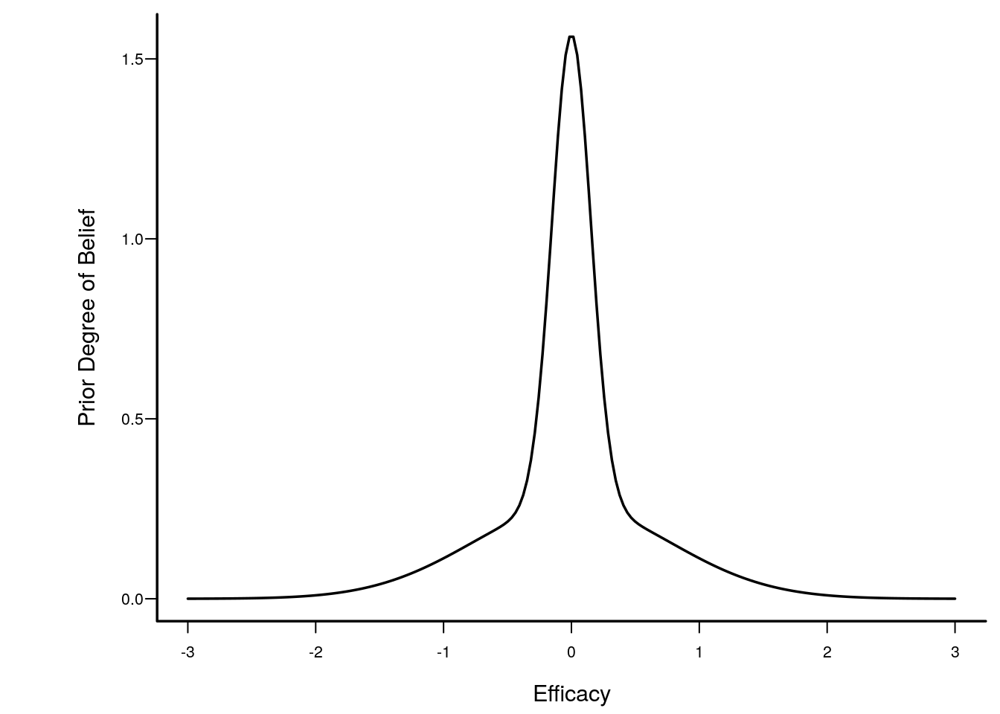
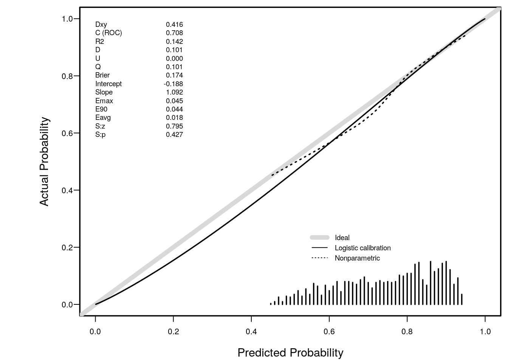
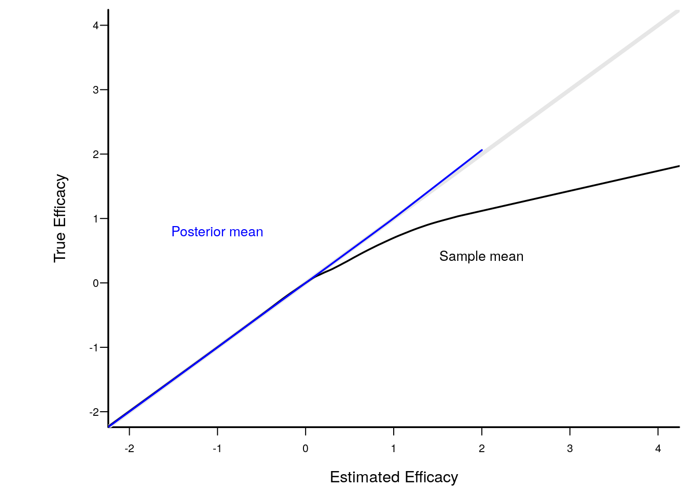

Bayesian inference, which follows the likelihood principle, is not affected by the experimental design or intentions of the investigator. P-values can only be computed if both of these are known, and as been described by Berry (1987) and others, it is almost never the case that the computation of the p-value at the end of a study takes into account all the changes in design that were necessitated when pure experimental designs encounter the real world.
When performing multiple data looks as a study progress, one can accelerate learning by more quickly abandoning treatments that do not work, by sometimes stopping early for efficacy, and frequently by arguing to extend a promising but as-yet-inconclusive study by adding subjects over the originally intended sample size. Indeed the whole exercise of computing a single sample size is thought to be voodoo by most practicing statisticians. It has become almost comical to listen to rationalizations for choosing larger detectable effect sizes so that smaller sample sizes will yield adequate power.
Multiplicity and resulting inflation of type I error when using frequentist methods is real. While Bayesians concern themselves with “what did happen?”, frequentists must consider “what might have happened?” because of the backwards time and information flow used in their calculations. Frequentist inference must envision an indefinitely long string of identical experiments and must consider extremes of data over potential studies and over multiple looks within each study if multiple looks were intended. Multiplicity comes from the chances (over study repetitions and data looks) you give data to be more extreme (if the null hypothesis holds), not from the chances you give an effect to be real. It is only the latter that is of concern to a Bayesian. Bayesians entertain only one dataset at a time, and if one computes posterior probabilities of efficacy multiple times, it is only the last value calculated that matters.
To better understand the last point, consider a probabilistic pattern recognition system for identifying enemy targets in combat. Suppose the initial assessment when the target is distant is a probability of 0.3 of being an enemy vehicle. Upon coming closer the probability rises to 0.8. Finally the target is close enough (or the air clears) so that the pattern analyzer estimates a probability of 0.98. The fact that the probabilty was <0.98 earlier is of no consequence as the gunner prepares to fire a canon. Even though the probability may actually decrease while the shell is in the air due to new information, the probability at the time of firing was completely valid based on then available information.
This is very much how an experimenter would work in a Bayesian clinical trial. The stopping rule is unimportant when interpreting the final evidence. Earlier data looks are irrelevant. The only ways a Bayesian would cheat would be to ignore a later look if it is less favorable than an earlier look, or to try to pull the wool over reviewers’ eyes by changing the prior distribution once data patterns emerge.
The meaning and accuracy of posterior probabilities of efficacy in a clinical trial are mathematical necessities that follow from Bayes’ rule, if the data model is correctly specified (this model is needed just as much by frequentist methods). So no simulations are needed to demonstrate these points. But for the non-mathematically minded, simulations can be comforting. For everyone, simulation code exposes the logic flow in the Bayesian analysis paradigm.
One other thing: when the frequentist does a sequential trial with possible early termination, the sampling distribution of the statistics becomes extremely complicated, but must be derived to allow one to obtain proper point estimates and confidence limits. It is almost never the case that the statistician actually performs these complex adjustments in a clinical trial with multiple looks. One example of the harm of ignoring this problem is that if the trial stops fairly early for efficacy, efficacy will be overestimated. On the other hand, the Bayesian posterior mean/median/mode of the efficacy parameter will be perfectly calibrated by the prior distribution you assume. If the prior is skeptical and one stops early, the posterior mean will be “pulled back” by a perfect amount, as shown in the simulation below.
We consider the simplest clinical trial design for illustration. The efficacy measure is assumed to be normally distributed with mean μ and variance 1.0, μ=0 indicates no efficacy, and μ<0 indicates a detrimental effect. Our inferential jobs are to see if evidence may be had for a positive effect and to see if further there is evidence for a clinically meaningful effect (except for the futility analysis, we will ignore the latter in what follows). Our business task is to not spend resources on treatments that have a low chance of having a meaningful benefit to patients. The latter can also be an ethical issue: we’d like not to expose too many patients to an ineffective treatment. In the simulation, we stop for futility when the probability that μ<0.05 exceeds 0.9, considering μ=0.05 to be a minimal clinically important effect.
The logic flow in the simulation exposes what is assumed by the Bayesian analysis.
What is it that the Bayesian must demonstrate to the frequentist and reviewers? She must demonstrate that the posterior probabilities computed as stated above are accurate, i.e., they are well calibrated. From our simulation design, the final posterior probability will either be the posterior probability computed after the last (500th) subject has entered, the probability of futility at the time of stopping for futility, or the probability of efficacy at the time of stopping for efficacy. How do we tell if the posterior probability is accurate? By comparing it to the value of μ (unknown to the posterior probability calculation) that generated the sequence of data points that were analyzed. We can compute a smooth nonparametric calibration curve for each of (efficacy, futility) where the binary events are μ>0 and μ<0.05, respectively. For the subset of the 50,000 studies that were stopped early, the range of probabilities is limited so we can just compare the mean posterior probability at the moment of stopping with the proportion of such stopped studies for which efficacy (futility) was the truth. The mathematics of Bayes dictates the mean probability and the proportion must be the same (if enough trials are run so that simulation error approaches zero). This is what happened in the simulations.
For the smaller set of studies not stopping early, the posterior probability of efficacy is uncertain and will have a much wider range. The calibration accuracy of these probabilities is checked using a nonparametric calibration curve estimator just as we do in validating risk models, by fitting the relationship between the posterior probability and the binary event μ>0.
The simulations also demonstrated that the posterior mean efficacy at the moment of stopping is perfectly calibrated as an estimator of the true unknown μ.
Simulations were run in R and used functions in the R Hmisc and rms package. The results are below. Feel free to take the code and alter it to run any simulations you’d like.
require(rms)knitrSet(lang='markdown',w=7,h=5,echo=TRUE)
gmu <- htmlGreek('mu')
half <- htmlSpecial('half')
geq <- htmlTranslate('>=')
knitr::read_chunk('fundefs.r')The prior distribution is skeptical against large values of efficacy, and assumes that detriment is equally likely as benefit of treatment. The prior favors small effects. It is a 1:1 mixture of two normal distributes each with mean 0. The SD of the first distribution is chosen so that P(μ > 1) = 0.1, and the SD of the second distribution is chosen so that P(μ > 0.25) = 0.05. Posterior probabilities upon early stopping would have the same accuracy no matter which prior is chosen as long as the same prior generating μ is used to generate the data.
sd1 <- 1 / qnorm(1 - 0.1)
sd2 <- 0.25 / qnorm(1 - 0.05)
wt <- 0.5 # 1:1 mixture
pdensity <- function(x) wt * dnorm(x, 0, sd1) + (1 - wt) * dnorm(x, 0, sd2)
x <- seq(-3, 3, length=200)
plot(x, pdensity(x), type='l', xlab='Efficacy', ylab='Prior Degree of Belief')
simseq <- function(N, prior.mu=0, prior.sd, wt, mucut=0, mucutf=0.05,
postcut=0.95, postcutf=0.9,
ignore=20, nsim=1000) {
prior.mu <- rep(prior.mu, length=2)
prior.sd <- rep(prior.sd, length=2)
sd1 <- prior.sd[1]; sd2 <- prior.sd[2]
v1 <- sd1 ^ 2
v2 <- sd2 ^ 2
j <- 1 : N
cmean <- Mu <- PostN <- Post <- Postf <- postfe <- postmean <- numeric(nsim)
stopped <- stoppedi <- stoppedf <- stoppedfu <- stopfe <- status <-
integer(nsim)
notignored <- - (1 : ignore)
# Derive function to compute posterior mean
pmean <- gbayesMixPost(NA, NA, d0=prior.mu[1], d1=prior.mu[2],
v0=v1, v1=v2, mix=wt, what='postmean')
for(i in 1 : nsim) {
# See http://stats.stackexchange.com/questions/70855
component <- if(wt == 1) 1 else sample(1 : 2, size=1, prob=c(wt, 1. - wt))
mu <- prior.mu[component] + rnorm(1) * prior.sd[component]
# mu <- rnorm(1, mean=prior.mu, sd=prior.sd) if only 1 component
Mu[i] <- mu
y <- rnorm(N, mean=mu, sd=1)
ybar <- cumsum(y) / j # all N means for N sequential analyses
pcdf <- gbayesMixPost(ybar, 1. / j,
d0=prior.mu[1], d1=prior.mu[2],
v0=v1, v1=v2, mix=wt, what='cdf')
post <- 1 - pcdf(mucut)
PostN[i] <- post[N]
postf <- pcdf(mucutf)
s <- stopped[i] <-
if(max(post) < postcut) N else min(which(post >= postcut))
Post[i] <- post[s] # posterior at stopping
cmean[i] <- ybar[s] # observed mean at stopping
# If want to compute posterior median at stopping:
# pcdfs <- pcdf(mseq, x=ybar[s], v=1. / s)
# postmed[i] <- approx(pcdfs, mseq, xout=0.5, rule=2)$y
# if(abs(postmed[i]) == max(mseq)) stop(paste('program error', i))
postmean[i] <- pmean(x=ybar[s], v=1. / s)
# Compute stopping time if ignore the first "ignore" looks
stoppedi[i] <- if(max(post[notignored]) < postcut) N
else
ignore + min(which(post[notignored] >= postcut))
# Compute stopping time if also allow to stop for futility:
# posterior probability mu < 0.05 > 0.9
stoppedf[i] <- if(max(post) < postcut & max(postf) < postcutf) N
else
min(which(post >= postcut | postf >= postcutf))
# Compute stopping time for pure futility analysis
s <- if(max(postf) < postcutf) N else min(which(postf >= postcutf))
Postf[i] <- postf[s]
stoppedfu[i] <- s
## Another way to do this: find first look that stopped for either
## efficacy or futility. Record status: 0:not stopped early,
## 1:stopped early for futility, 2:stopped early for efficacy
## Stopping time: stopfe, post prob at stop: postfe
stp <- post >= postcut | postf >= postcutf
s <- stopfe[i] <- if(any(stp)) min(which(stp)) else N
status[i] <- if(any(stp)) ifelse(postf[s] >= postcutf, 1, 2) else 0
postfe[i] <- if(any(stp)) ifelse(status[i] == 2, post[s],
postf[s]) else post[N]
}
list(mu=Mu, post=Post, postn=PostN, postf=Postf,
stopped=stopped, stoppedi=stoppedi,
stoppedf=stoppedf, stoppedfu=stoppedfu,
cmean=cmean, postmean=postmean,
postfe=postfe, status=status, stopfe=stopfe)
}set.seed(1)
z <- simseq(500, prior.mu=0, prior.sd=c(sd1, sd2), wt=wt, postcut=0.95,
postcutf=0.9, nsim=50000)
mu <- z$mu
post <- z$post
postn <- z$postn
st <- z$stopped
sti <- z$stoppedi
stf <- z$stoppedf
stfu <- z$stoppedfu
cmean <- z$cmean
postmean<- z$postmean
postf <- z$postf
status <- z$status
postfe <- z$postfe
rmean <- function(x) formatNP(mean(x), digits=3)
k <- status == 2
kf <- status == 1Also stop for futility: the instant P(μ < 0.05) ≥ 0.9
Of trials stopped early for futility, proportion with μ < 0.05: 0.923
The simulations took about 25 seconds in total.
Above we saw perfect calibration of the probabilities of efficacy and futility upon stopping. Let’s now examine the remaining probabilities, for the 1169 trials going to completion. For this we use the same type of nonparametric calibration curve estimation as used for validating risk prediction models. This curve estimates the relationship between the estimated probability of efficacy (Bayesian posterior probability) and the true probability of efficacy.
k <- status == 0
pp <- postfe[k]
truly.efficacious <- mu[k] > 0
val.prob(pp, truly.efficacious) Dxy C (ROC) R2 D D:Chi-sq
4.160899e-01 7.080449e-01 1.422536e-01 1.012220e-01 1.193285e+02
D:p U U:Chi-sq U:p Q
NA 4.903659e-04 2.573238e+00 2.762031e-01 1.007316e-01
Brier Intercept Slope Emax E90
1.735093e-01 -1.881482e-01 1.091834e+00 4.535884e-02 4.352826e-02
Eavg S:z S:p
1.779552e-02 7.948458e-01 4.267032e-01 
The posterior probabilities of efficacy tended to be between 0.45 (had they been much lower the trial would have been stopped for futility) and 0.95 (the cutoff for stopping for efficacy). Where there are data, the nonparametric calibration curve estimate is very close to the line of identity. Had we done even more simulations we would have had many more non-stopped studies and the calibration estimates would be even closer to the ideal. For example, when the posterior probability of efficacy is 0.6, the true probability that the treatment was effective (μ actually > 0) is 0.6.
When stopping early because of evidence that μ > 0, the sample mean will overestimate the true mean. But with the Bayesian analysis, where the prior favors smaller treatment effects, the posterior mean/median/mode is pulled back by a perfect amount, as shown in the plot below.
plot(0, 0, xlab='Estimated Efficacy',
ylab='True Efficacy', type='n', xlim=c(-2, 4), ylim=c(-2, 4))
abline(a=0, b=1, col=gray(.9), lwd=4)
lines(supsmu(cmean, mu))
lines(supsmu(postmean, mu), col='blue')
text(2, .4, 'Sample mean')
text(-1, .8, 'Posterior mean', col='blue')
R version 3.4.3 (2017-11-30) Platform: x86_64-pc-linux-gnu (64-bit) Running under: Ubuntu 17.10 Matrix products: default BLAS: /usr/lib/x86_64-linux-gnu/blas/libblas.so.3.7.1 LAPACK: /usr/lib/x86_64-linux-gnu/lapack/liblapack.so.3.7.1 attached base packages: [1] methods stats graphics grDevices utils datasets base other attached packages: [1] rms_5.1-2 SparseM_1.77 Hmisc_4.1-1 ggplot2_2.2.1 [5] Formula_1.2-2 survival_2.41-3 lattice_0.20-35To cite R in publication use:
R Core Team (2017). R: A Language and Environment for Statistical Computing. R Foundation for Statistical Computing, Vienna, Austria. https://www.R-project.org/.